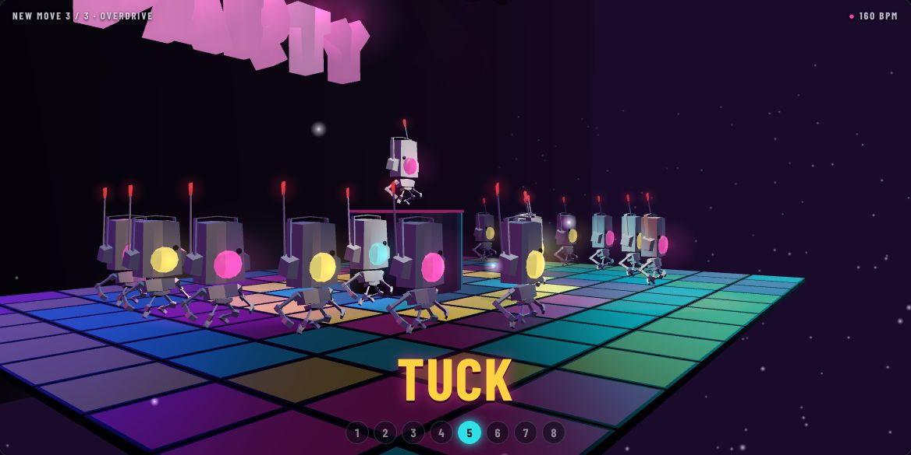
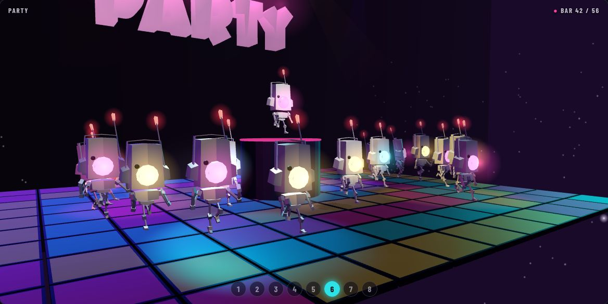
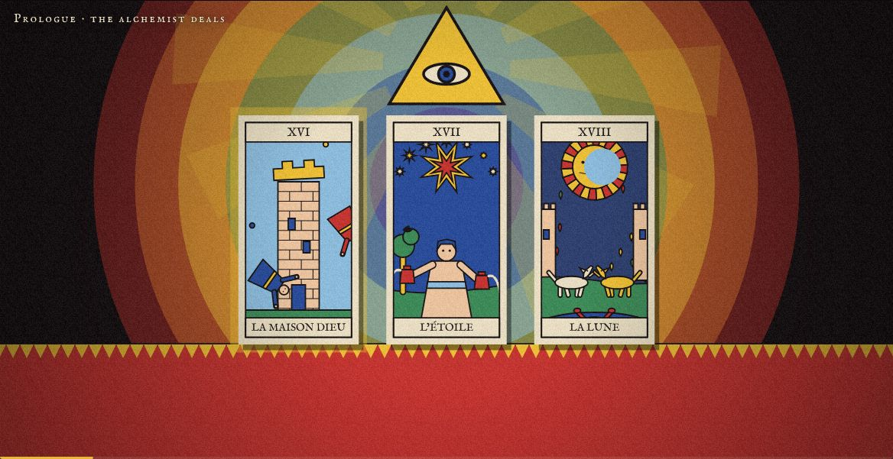
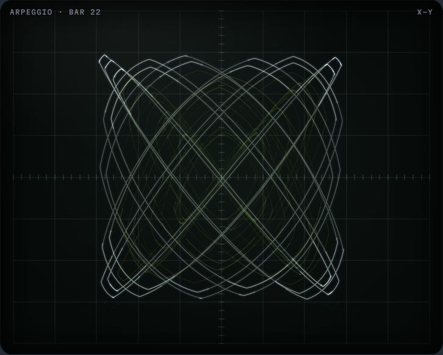

DemosNewest first
-
No. 004
2026-10-29
New Moves
Three original dances for the Antenna Aerobics robots, composed by remixing the keyframed poses in
robot_CameraWork.blend: house, electro-funk and hi-NRG, each with its own synthesized track.
-
No. 003
2026-10-28
Antenna Aerobics
The radio-headed robots from
robot_CameraWork.blendtake a 90-second aerobics class to an original Hi-NRG score, then sixteen of them party under the disco ball.
-
No. 002
2026-10-28
The Alchemist’s Spread
Three random Tarot de Marseille cards open into painted tableaux with gongs, bells and chant, after Jodorowsky’s The Holy Mountain. Built to run on modest hardware.

-
No. 001
2026-10-27
Lissajous Nocturne
A 77-second synth piece. The left and right audio channels steer an oscilloscope beam, so every musical interval draws its own figure.
